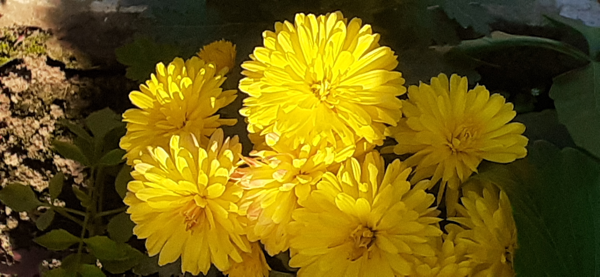

|

|
YELLO DAHLIA !!!!!
THIS PICTURE IS OF YELLO DAHLIA.THIS PICTURE IS CLICKED BY MR.AARYAN SINGH SACHAN.
Yellow dahlias are nothing but cheerful, so their flower symbolism is easy to see.
These dahlias help us go through life with a bit of joy and childlike glee.
If someone is having a bad day, a bouquet of yellow dahlias will help brighten things up.
Yellow-flowering Dahlias are like bursts of sunshine in the garden.
The range of color they provide captures. The mood of two seasons with summery shades of bright
(almost fluorescent) citron yellow and sunny lemon mingling with autumn tones of harvest gold.
|